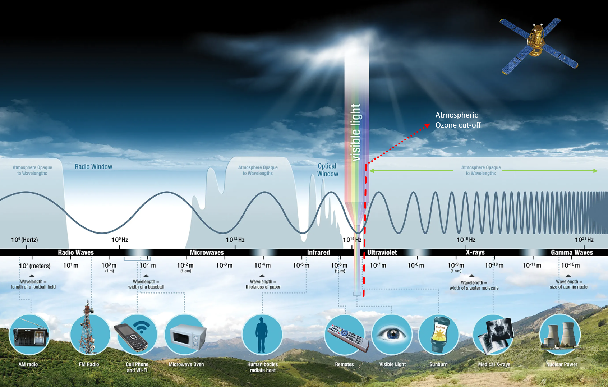

Understanding the World from Afar: A Comprehensive Guide to Remote Sensing
Introduction
Remote sensing is the science of acquiring information about an object or phenomenon without being in direct contact with it.
It is a vast and complex field, with applications in many different disciplines, including geology, geography, environmental
science, agriculture, forestry, and hydrology.
How does remote sensing work?
Remote sensing works by measuring the energy that is emitted or reflected from an object. The energy can be in the form of visible light, infrared radiation, radar signals, or other forms of electromagnetic radiation. The energy is then recorded and processed to create images or other data products that can be used to interpret the properties of the object.
In the pages that follow, we embark on an exploration of the fundamentals, technologies, applications, and future horizons of remote sensing. From the vantage point of
satellites to the nimble drones patrolling our skies, we delve into the intricate processes of data acquisition, analysis, and interpretation. Remote sensing, a catalyst
for transformative insights and informed decision-making, invites us to witness the world with a clarity that transcends physical boundaries.
Section 1: Fundamentals of Remote Sensing
Basic Principles
Key Elements of the Remote Sensing Process: From Energy Source to Application
In remote sensing, the interaction between incident radiation and the targets of interest is a common process. This is illustrated in imaging systems, which encompass seven key elements.
It's important to recognize that remote sensing also includes the detection of emitted energy and the utilization of non-imaging sensors.
Energy source or Illumination (A): The first requirement for remote sensing is to have
an energy source which illuminates or provides electromagnetic energy to the target
of interest
Radiation and the Atmosphere (B) - as the energy travels from its source to the
target, it will come in contact with and interact with the atmosphere it passes through. This
interaction may take place a second time as the energy travels from the target to the sensor.
Interaction with the Target (C) - once the energy makes its way to the target through the
atmosphere, it interacts with the target depending on the properties of both the target and the
radiation.
Recording of Energy by the Sensor (D) - after the energy has been scattered by, or
emitted from the target, we require a sensor (remote - not in contact with the target) to collect
and record the electromagnetic radiation.
Transmission, Reception, and Processing (E) - the energy recorded by the sensor has
to be transmitted, often in electronic form, to a receiving and processing station where the
data are processed into an image (hardcopy and/or digital)
Interpretation and Analysis (F) - the processed image is interpreted, visually and/or
digitally or electronically, to extract information about the target which was illuminated.
Application (G) - the final element of the remote sensing process is achieved when we
apply the information we have been able to extract from the imagery about the target in order
to better understand it, reveal some new information, or assist in solving a particular problem.
Electromagnetic Spectrum and Its Relevance:
For remote sensing to be effective, it requires a source of electromagnetic radiation to illuminate the target,
except when the target itself emits the sensed energy. All electromagnetic radiation exhibits fundamental properties
and adheres to predictable behaviors governed by wave theory. It comprises an electric field (E) that fluctuates in
magnitude perpendicular to the direction of propagation and a magnetic field (M) oriented at right angles to the electric
field. Both fields travel at the speed of light (c). Two characteristics of electromagnetic
radiation are particularly important for understanding remote sensing. These are the
wavelength λ and frequency ν. Wavelength and frequency are related to
each other by:
c = λ ν
The electromagnetic spectrum ranges from the shorter wavelengths (including gamma and
x-rays) to the longer wavelengths (including microwaves and broadcast radio waves).
There are several regions of the electromagnetic spectrum which are useful for remote sensing.

Image credit: NASA
Although we see sunlight as a uniform or homogeneous colour, it is actually composed of various wavelengths of radiation in primarily the ultraviolet, visible and infrared portions of the spectrum.
UV: For most purposes, the ultraviolet or UV portion of the spectrum has the shortest
wavelengths which are practical for remote sensing. Some Earth surface materials,
primarily rocks and minerals, fluoresce or emit visible light when illuminated by UV radiation.
Visible (0.4 - 0.7 µm): The light which our eyes - our "remote sensors" - can detect is part of the visible spectrum.
Infrared (IR) (0.7 - 100 µm): The next portion of the spectrum of interest is the infrared (IR) region.
The infrared region can be divided into two categories based on their radiation properties -
Reflected IR: Radiation in the reflected IR region is used for remote sensing purposes in ways very similar to radiation in the visible portion. The reflected
IR covers wavelengths from approximately 0.7 µm to 3.0 µm.
Emitted or thermal IR: The thermal IR region is quite different than the visible and reflected IR portions,
as this energy is essentially the radiation that is emitted from the Earth's surface in the form of heat. The thermal IR covers wavelengths from
approximately 3.0 µm to 100 µm.
Microwave region (1 mm - 1 m):The portion of the spectrum of more recent interest to remote sensing is the microwave region.
Components of Remote Sensing:
Interaction of Electromagnetic Radiation: Before radiation used for remote sensing reaches the Earth's surface it has to travel
through some distance of the Earth's atmosphere. Particles and gases in the atmosphere can affect the incoming light and radiation. These effects are caused by the mechanisms
of scattering and absorption
Image credit: US Department of Energy Office of Science
Rayleigh scattering: Rayleigh scattering occurs when particles are significantly smaller than the wavelength of radiation, such as tiny dust particles or nitrogen and oxygen molecules. This phenomenon causes shorter wavelengths of energy to scatter more than longer wavelengths. In the upper atmosphere, Rayleigh scattering is the predominant mechanism. The daytime sky appears blue because, as sunlight passes through the atmosphere, the shorter (blue) wavelengths of the visible spectrum scatter more than the longer ones. During sunrise and sunset, when light travels a longer path through the atmosphere, the scattering of shorter wavelengths is more pronounced, contributing to the colorful hues of the sky.
Mie scattering: Mie scattering takes place when particles are approximately the same size as the wavelength of the radiation. Common causes of Mie scattering include dust, pollen, smoke, and water vapor. Unlike Rayleigh scattering, Mie scattering impacts longer wavelengths. It is prevalent in the lower atmosphere where larger particles are more abundant, and it becomes dominant under overcast cloud conditions.
Nonselective scattering: The last significant scattering mechanism is known as nonselective scattering. This occurs when particles are considerably larger than the wavelength of the radiation, typically observed with water droplets and large dust particles. Nonselective scattering earns its name because it scatters all wavelengths roughly equally. Consequently, this type of scattering is responsible for the white appearance of fog and clouds to our eyes, as blue, green, and red light are scattered in approximately equal amounts, resulting in a combination that appears as white light.
Absorption: Absorption represents another primary mechanism in the interaction of electromagnetic radiation with the atmosphere. Unlike scattering, this
process involves molecules in the atmosphere absorbing energy across different wavelengths. Ozone, carbon dioxide, and water vapor are the three primary atmospheric
constituents responsible for this radiation absorption phenomenon.
Ozone: Ozone plays a crucial role in absorbing the potentially harmful ultraviolet radiation emitted by the sun, shielding most living organisms.
The presence of this protective layer in the atmosphere prevents skin damage that would occur if exposed to sunlight without it.
carbon dioxide (greenhouse gas): Carbon dioxide is often referred to as a greenhouse gas due to its strong absorption of radiation in the far infrared
part of the spectrum, particularly associated with thermal heating. This absorption property contributes to trapping heat within the atmosphere. Meanwhile, water vapor in
the atmosphere plays a significant role in absorbing both incoming longwave infrared and shortwave microwave radiation, occurring within the range of 22µm to 1m. The presence
of water vapor in the lower atmosphere varies significantly based on location and time of year. For instance, air above a desert would contain minimal water vapor, limiting
energy absorption, while tropical regions, characterized by high humidity, would have elevated concentrations of water vapor.
These gases have a selective absorption of electromagnetic energy within specific regions of the spectrum, influencing the areas suitable for remote sensing observations. Segments of the spectrum that are minimally affected by atmospheric absorption, making them valuable for remote sensors, are termed "atmospheric windows." By comparing the characteristics of the two primary energy sources, the sun and the Earth, with available atmospheric windows, we can identify wavelengths most effectively used for remote sensing.
The visible spectrum, aligned with the peak energy level of the sun and matching our eyes' sensitivity, corresponds to an atmospheric window. Additionally, the thermal infrared region around 10 µm is a window for the Earth's emitted heat energy, while wavelengths beyond 1 mm create a substantial window in the microwave region.
Now that we comprehend the intricate journey of electromagnetic energy from its source to the surface, the next exploration involves understanding the fate of this radiation upon reaching the Earth's surface.
Radiation - Target Interactions: Radiation that is not absorbed or scattered in
the atmosphere can reach and interact with the Earth's surface. There are three forms of interaction that can take place when energy strikes or is incdent upon the surface:
Absorption (A): Absorption (A) occurs when radiation (energy) is absorbed into the target.
Transmission (T): Transmission occurs when radiation (energy) passes through a target.
Reflection (R):Reflection (R) occurs when radiation "bounces" off the target and is redirected.
The total incident energy will interact with the surface in one or more of these three ways. The proportions of each will depend on the wavelength of the energy and the
material and condition of the feature. In remote sensing, we are most interested in
measuring the radiation reflected from targets. Reflection may occur in two main ways:
Specular reflection: When a surface is smooth we get specular or mirror-like reflection where all (or almost all) of the energy is directed away
from the surface in a single direction.
Diffuse reflection: . Diffuse reflection occurs when the surface is rough and the energy is reflected almost uniformly in all directions.
Most earth surface features lie somewhere between perfectly specular or perfectly diffuse
reflectors. If the wavelengths are much smaller than the surface variations or the particle
sizes that make up the surface, diffuse reflection will dominate. For example, finegrained
sand would appear fairly smooth to long wavelength microwaves but would appear quite rough to the visible wavelengths.
For example:
Green vegitation: Leaves contain a chemical compound called chlorophyll, which strongly absorbs radiation in the red and blue wavelengths while reflecting
green wavelengths. During summer, when chlorophyll content is at its peak, leaves appear their greenest. In autumn, with reduced chlorophyll, there's less
absorption and more reflection of red wavelengths, causing leaves to appear red or yellow (yellow being a combination of red and green wavelengths). Healthy leaves' internal
structure acts as excellent diffuse reflectors of near-infrared wavelengths. While our eyes perceive trees as normal, if sensitive to near-infrared, they would appear extremely
bright. Monitoring near-IR reflectance is a method for scientists to assess the health of vegetation.
Water:
Water tends to appear blue or blue-green due to the stronger reflectance of shorter wavelengths, primarily in the visible and near-infrared spectrum. Longer wavelength visible
and near-infrared radiation is absorbed more by water, making it look darker when viewed at red or near-infrared wavelengths. The presence of suspended sediment in the water
enhances reflectivity, resulting in a brighter appearance, and may cause a slight shift in the apparent color towards longer wavelengths. Distinguishing between suspended
sediment and shallow but clear water can be challenging as they exhibit similar visual characteristics. Algae containing chlorophyll absorbs more blue wavelengths and reflects
green, giving the water a greenish appearance when algae is present. Additionally, the water surface's topography, including factors like roughness, smoothness, and floating
materials, introduces complications for interpretation, potentially influenced by specular reflection and other factors affecting color and brightness.
Passive remote sensing relies on the energy that is emitted or reflected from the object itself. This includes visible light photography, infrared imaging, and radiometry.
Active Remote Sensing:
Active remote sensing sends out its own energy source and measures the energy that is reflected back from the object. This includes radar, lidar, and sonar.
What are the different platforms for remote sensing?
Remote sensing can be conducted from a variety of platforms, including:
Ground-based platforms, such as sensors mounted on towers or vehicles.
Airborne platforms, such as airplanes, helicopters, and drones.
Spaceborne platforms, such as satellites.
Section 3: Applications of Remote Sensing
Remote sensing has a wide range of applications, including:
Mapping and monitoring of land cover and land use.
Monitoring of natural resources, such as forests, water resources, and minerals.
Assessment of natural hazards, such as floods, earthquakes, and wildfires.
Climate change research.
Precision agriculture.
Highlight the significance of remote sensing in solving practical problems:
Section 4: Data Analysis and Processing
Data Collection and Processing:
Pre-processing Steps (calibration, correction):
Image Enhancement Techniques:
Image Classification and Feature Extraction:
Key Terms and Concepts:
Radiometric and Geometric Corrections:
Spectral Signatures:
Remote Sensing Applications Terminology:
Section 5: Future Trends in Remote Sensing
The future of remote sensing is bright, with a number of new technologies and applications on the horizon. These include
The development of new sensors with higher spatial, spectral, and temporal resolution.
The increased use of artificial intelligence (AI) to analyze and interpret remote sensing data.
The development of new applications, such as remote sensing of air quality and greenhouse gas emissions.